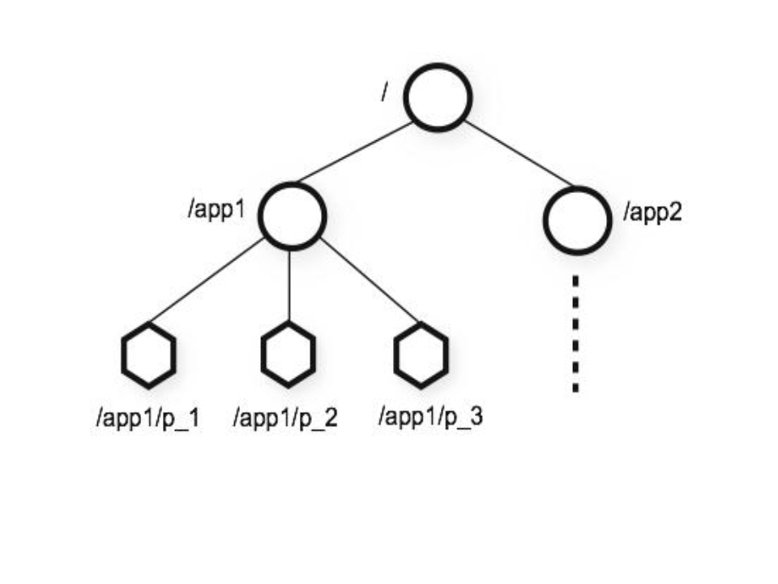
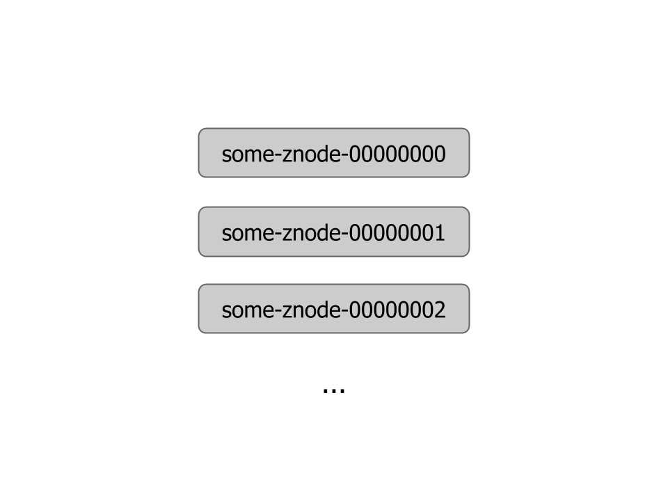
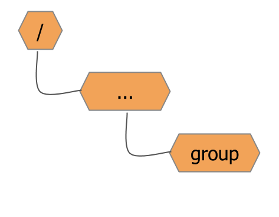
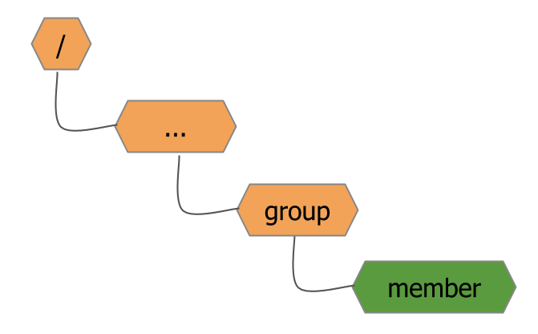
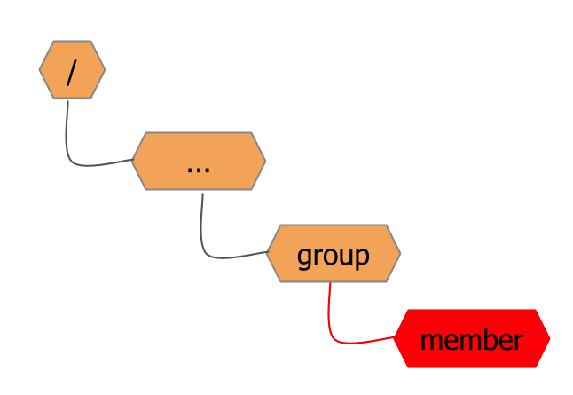
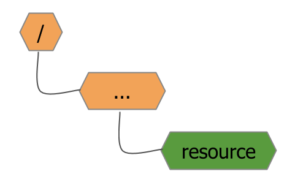
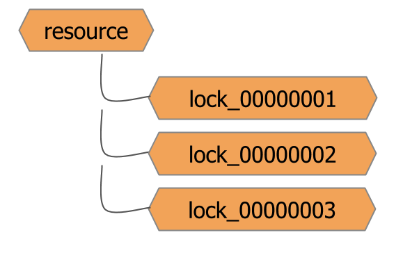
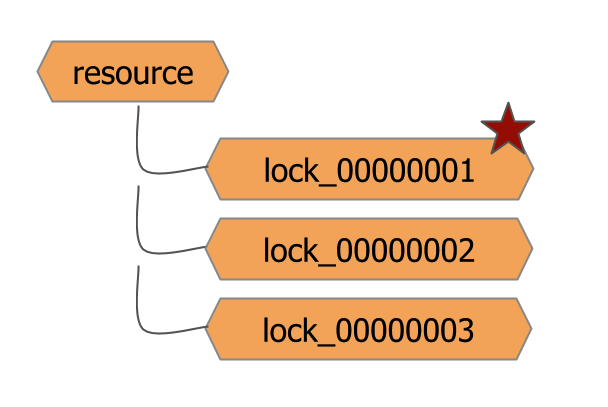
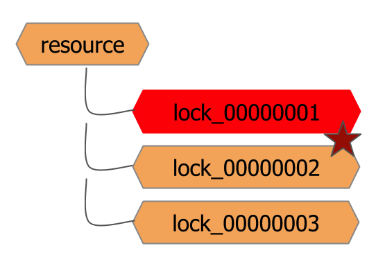
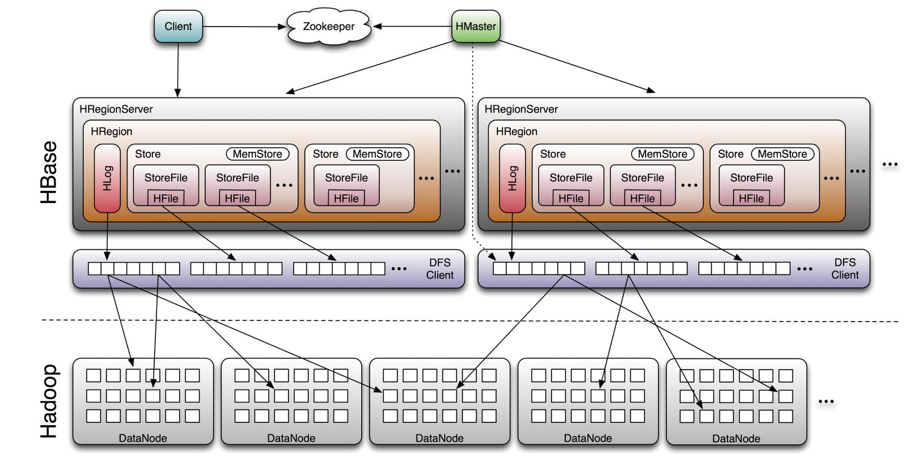

Apache Hadoop Talks
Akvelon, Kharkiv
By Mairbek Khadikov / @mairbek
Previous talk revamp
Previous talk revamp
Any Questions?
Hadoop Zoo
- Ambari
- Avro
- Chukwa
- HBase
- Hive
- Mahout
- Pig
- ZooKeeper
- More stuff in incubator
Zookeeper
Distributed coordiation service
Coordination
Any distributed system needs some kind of coordination.
Coordination
- Synchronization
- Configuration Maintenance
- Naming
- Groups
Coordination
Challenging to implement right
Coordination
High availability is the most important requirement
Zookeeper
Simply a data storage
- Distributed
- Scalable
- Fault Tolerant
- Open Source
Zookeeper data model
ZNode
- File
- Directory
- Atomic Operations
- Versions
- Watches
Znode Flags
- Sequential
- Ephemeral
Sequential
Ephemeral
ZNode exists as long as the session that created the znode is active.
ZooKeeper Guaranties
- Sequential Consistency
- Atomicity
- Reliability
- Timelines
- Single System Image
Cluster mode
Data stored in memory on each server

Cluster mode
Leader is chosen on start
Cluster mode
Client connects to followers
Cluster mode
All changes applied through the leader
Cluster mode
Data is commited when most of the nodes received the update
Group Membership
Group has it onw znode
Group Membership
Group member creates ephemeral child node
Group Membership
In case if member is unavailable znode will be automatically removed
Distributed Lock
For shared resource create znode
Distributed Lock
Every process creates ephemeral&sequential node
Distributed Lock
Process with smallest number acquires the lock
Distributed Lock
Other processes watch the node waiting for the removal
Distributed Lock
To release the lock just remove the znode
Other receipies
- Barier
- Double Barier
- Leader election
- Read-Write Lock
- Queue
- Priority Queue
HBase
HBase
Open source clone of Google's BigTable
HBase
- Distributed
- Not relational
- Column-oriented
- Fault tolerant
- Scales linearly
HBase
- Auto sharding
- Auto failover
- No single point of failure
- Strongly consistent
- Built on top of HDFS
- Supports MapReduce
Say NO
- SQL
- Joins
- Transactions
- Secondary Indicies
Data Model
Map (table, row key, column family:column, timestamp) => value
Data Model
SortedMap<RowKey, List<SortedMap<CF, List<SortedMap<Column, List<Pair<Value,TimeStamp>>>>>>>
HBase Architecture
When to use HBase
- Big data
- No schema
- High write volume
- Key based access
- Sequential reads
Pig
Why do we need Pig?
Why do we need Pig?
Because writing MapReduce in Java sucks.
Pig latin
Data flow language to write MapReduce jobs
Word count in Pig
input_lines = LOAD '/input-file' AS (line:chararray);
words = FOREACH input_lines GENERATE FLATTEN(TOKENIZE(line)) AS word;
word_groups = GROUP words BY word;
word_count = FOREACH word_groups GENERATE COUNT(words) AS count, group AS word;
STORE word_count INTO '/output-file';
Why Pig?
- Less code
- Less time to implement MapReduce job
- Easy to read code
- Easy to learn DSL
- Reduces Hadoop complexity
Pig Commands: Load
Loads data from the datasource
Pig Commands: Store
Store data to the datasource
Pig Commands: Join
Joins two or more inputs based on key
Pig Commands: Split
Split data to several sets based on specified condition
Pig Commands: Group
Groups records with the same key
Pig Commands: Union
Merge two datasets
Pig != SQL
- Focus on dataflow
- Nested relational data model
- Implicit schema
- Scan centric workload